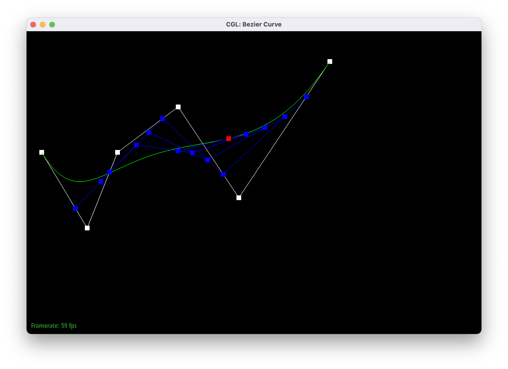
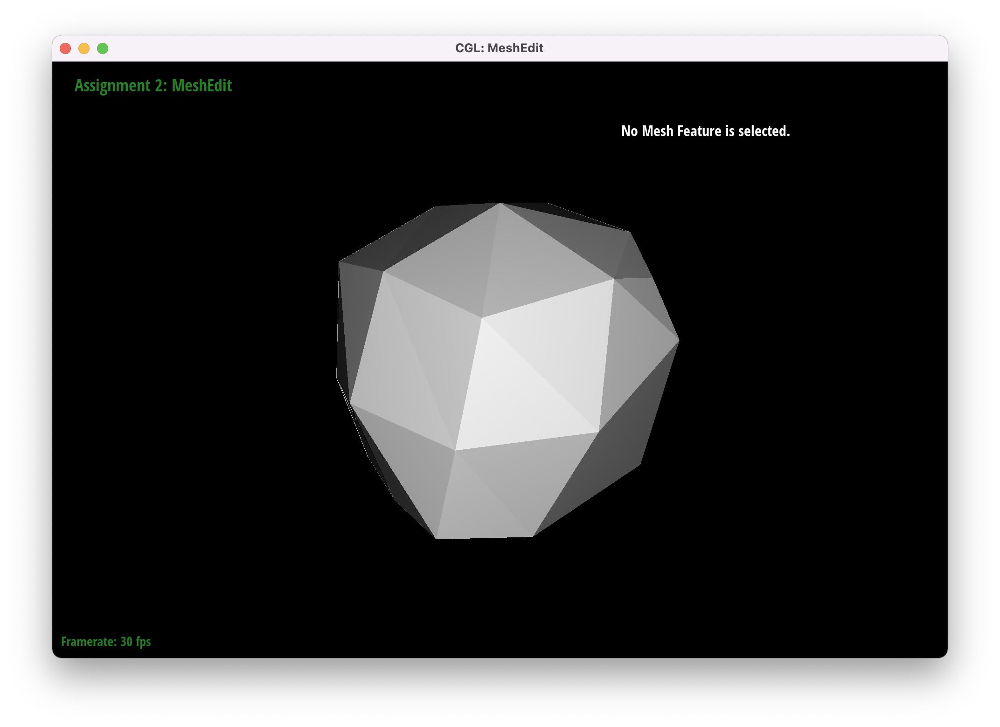

Overview
For this project, I implemented de Casteljau's algorithm to build Bezier Curve and surfaces, calculated area-weighted vertex normals for Phong shading, and loop subdivison. Now I can construct a teapot from points, give it nice shading and upsample it to a higher resolution. It was fantastic to be able to implement what we learned in lecture and see it in action. I now have better appreication for the actual effect of what we learned.
Task 1
de Casteljau's algorithm recursively apply linear interpolations between 2 points on a curve. It stops when there is one final point. I implemented evaluateStep to evalute one step of the de Casteljau's algorithm by looping through 2 adjecent points on the curve and performing linear interpolation.
Modifying t a little
Task 2
de Casteljau's algorithm can be extended to a surface by first performing thr algorithm on each row of the surface, and then once again from the resulting points. I implemented evaluate1D to repeatedly call evaluate from Part I until there is only 1 point left. I then implemented evaluate to first call evaluate1D on each row of the surface, and then call evaluate1D on the resulting points.
Task 3 : Area-Weighted Vertex Normals
Using a do-while loop, I successively traversed all the neighboring vertexs of the given vertex. For each vertex, I defined a vector between the given vertex and the current vertex, and another vector between the given vertex and the next vertex. I calculated the normal by taking the cross product of the two vectors, which is equivalent to the normal vector of their face. I also calculated the area of the triangle by taking 0.5 * of the norm of the normal vector. Then, I found the vector normal of the given vertex as the sum of the normal vectors of all the faces that the given vertex is a part of, weighted by the area of the face. Finally, I normalized the vector normal of the given vertex.
Here's screenshot of teapot shading with and without vertex normals

Task 4 : Edge Flip
I first drew out a diagram with all the vertices, edges, halfedges, and faces of the mesh. I labeled each vertex, edge, halfedge, and face with a number. I then drew out a diagram of the mesh after the edge flip. In my implementation, I first checked if the edge is a boundary edge. If it is, I returned nothin. Otherwise, I declare all vertices, edges, halfedges, and faces that are involved in the edge flip according to my diagram. I then reassigned all of their attributes to the new values based on my diagram. Thankfully I didn't have to debug this.
Here's the before and after of edge flip
Task 5 : Edge Split
I first drew out a diagram with all the vertices, edges, halfedges, and faces of the mesh. I labeled each vertex, edge, halfedge, and face with a number. I then drew out a diagram of the mesh after the edge split. In my implementation, I first checked if the edge is a boundary edge. If it is, I returned nothin. Otherwise, I declare all vertices, edges, halfedges, and faces that are involved in the edge split according to my diagram. I also declared 1 new vertex, 3 new edges, 6 new halfedges, and 2 new faces. I then reassigned all of their attributes to the new values based on my diagram. I calculated the position of the new vertex by taking the average of the two vertices that the edge is between. I made some careless mistakes while reassigning their attributes. I successfully debugged by using the check_for statements, and making sure that the attributes of the new vertices, edges, halfedges, and faces were correct.
Here's the before and after of edge split
Here's the before and after of edge split and edge flip
Task 6 : Loop Subdivision for Mesh Upsampling
I frist computed the new positions for the vertices in the mesh using the formula given in class. I marked these vertices as old. I then looped through the orginal edges and computed the positions of its midpoints using the formula given in class. I then split each original edge in the mesh and assigned the new position of each new vertex to be the new position of the edge (calculated in the previous step). I then flipped any new edge that connects a new vertex with an old vertex. Finally, I assigned the positions of each vertex to its new position.
Here is the result of loop subdivision on a cube.
Here is the result of loop subdivision on a the teapot, with a focus on the handle.

Sharp corners and edges disappeared after successively subdivision. But the new figure is no longer symmetrical. Certain corners seem to be emphasized. I messed around with edge splitting, and it does seem to reduce the effect of smoothening, but now the mesh looks funny.
After successively loop division, the cube does become assymtrical. I suspect this is because of the diagonal edge on the face of the cube. Since each face only has one diagonal edge, the new faces as a result of edge flip and split is not evenly distributed on the orignal face of the cube, yield assymetry. I was able to reduce the assymmetry by pre-spliting each edge as shown in the photo below.
And it does seem to work!

I did run into some bugs, but that was thankfully solved by using the check_for statements. I also had to modify my code in part 5 to indicate which edges are new and which are old.